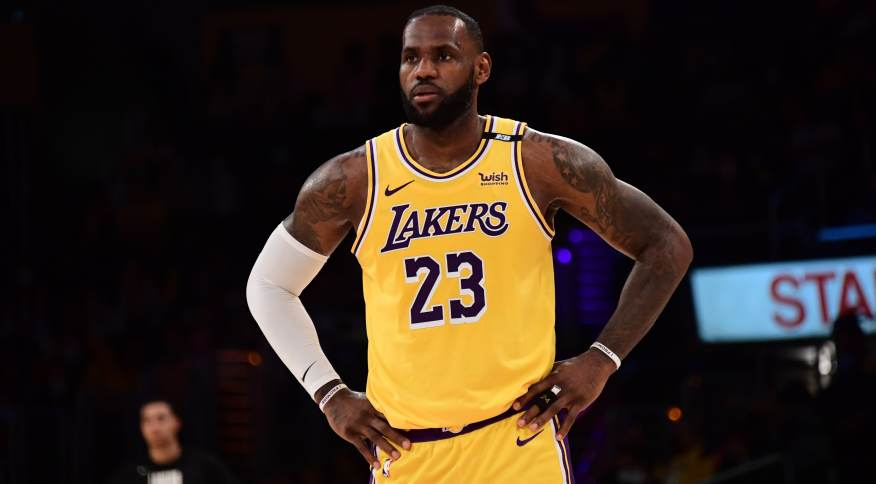

Lebron conquistou quatro títulos da NBA, quatro prêmios de MVP da NBA e quatro prêmios de MVP de Finais da NBA, além de duas medalhas de ouro olímpicas com a Seleção Americana. LeBron é o maior pontuador e o quarto jogador com mais assistências na história da NBA. Entre 2011 e 2020, ele disputou nove finais da NBA, a única exceção foi em 2019. LeBron detém o recorde de jogador com mais aparições no NBA All-Star Game (19) e NBA All-Team (19), além de ter seis aparições no NBA All-Team Defensive. LeBron é o único atleta com sete prêmios de Melhor Jogador da NBA pela ESPY, o Oscar do Esporte Americano. Em 2019, ele foi nomeado o Atleta da Década de 2010 pela Associated Press. Em 2021, ele foi homenageado como um dos 75 maiores jogadores da história da NBA.